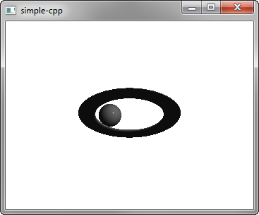

Qt 3D: Simple C++ Example
A C++ application that demonstrates how to render a scene in Qt 3D.

Simple demonstrates how to render a scene in Qt 3D.
Running the Example
To run the example from Qt Creator, open the Welcome mode and select the example from Examples. For more information, visit Building and Running an Example.
Setting Up the Scene
We set up the scene in the main.cpp file.
To be able to use the classes and functions in the Q3D Core, Q3D Render, Qt 3D Input, and Qt 3D Extras modules, we must include the classes:
#include <Qt3DCore/QEntity> #include <Qt3DRender/QCamera> #include <Qt3DRender/QCameraLens> #include <Qt3DCore/QTransform> #include <Qt3DCore/QAspectEngine> #include <Qt3DInput/QInputAspect> #include <Qt3DRender/QRenderAspect> #include <Qt3DExtras/QForwardRenderer> #include <Qt3DExtras/QPhongMaterial> #include <Qt3DExtras/QCylinderMesh> #include <Qt3DExtras/QSphereMesh> #include <Qt3DExtras/QTorusMesh>
First, we set up the scene and specify its root entity:
Qt3DCore::QEntity *createScene() { Qt3DCore::QEntity *rootEntity = new Qt3DCore::QEntity;
We specify the material to use for Phong rendering:
Qt3DRender::QMaterial *material = new Qt3DExtras::QPhongMaterial(rootEntity);
The root entity is just an empty shell and its behavior is defined by the components that it references. We specify the torus entity and its mesh, transform, and material components:
Qt3DCore::QEntity *torusEntity = new Qt3DCore::QEntity(rootEntity);
Qt3DExtras::QTorusMesh *torusMesh = new Qt3DExtras::QTorusMesh;
torusMesh->setRadius(5);
torusMesh->setMinorRadius(1);
torusMesh->setRings(100);
torusMesh->setSlices(20);
Qt3DCore::QTransform *torusTransform = new Qt3DCore::QTransform;
torusTransform->setScale3D(QVector3D(1.5, 1, 0.5));
torusTransform->setRotation(QQuaternion::fromAxisAndAngle(QVector3D(1, 0, 0), 45.0f));
torusEntity->addComponent(torusMesh);
torusEntity->addComponent(torusTransform);
torusEntity->addComponent(material);
We also specify a sphere entity and its components:
Qt3DCore::QEntity *sphereEntity = new Qt3DCore::QEntity(rootEntity);
Qt3DExtras::QSphereMesh *sphereMesh = new Qt3DExtras::QSphereMesh;
sphereMesh->setRadius(3);
Qt3DCore::QTransform *sphereTransform = new Qt3DCore::QTransform;
OrbitTransformController *controller = new OrbitTransformController(sphereTransform);
controller->setTarget(sphereTransform);
controller->setRadius(20.0f);
QPropertyAnimation *sphereRotateTransformAnimation = new QPropertyAnimation(sphereTransform);
sphereRotateTransformAnimation->setTargetObject(controller);
sphereRotateTransformAnimation->setPropertyName("angle");
sphereRotateTransformAnimation->setStartValue(QVariant::fromValue(0));
sphereRotateTransformAnimation->setEndValue(QVariant::fromValue(360));
sphereRotateTransformAnimation->setDuration(10000);
sphereRotateTransformAnimation->setLoopCount(-1);
sphereRotateTransformAnimation->start();
sphereEntity->addComponent(sphereMesh);
sphereEntity->addComponent(sphereTransform);
sphereEntity->addComponent(material);
We use a property animation to animate the sphere transform.
Finally, we initialize a Qt GUI application that uses a Qt 3D window:
int main(int argc, char* argv[]) { QGuiApplication app(argc, argv); Qt3DExtras::Qt3DWindow view; Qt3DCore::QEntity *scene = createScene(); // Camera Qt3DRender::QCamera *camera = view.camera(); camera->lens()->setPerspectiveProjection(45.0f, 16.0f/9.0f, 0.1f, 1000.0f); camera->setPosition(QVector3D(0, 0, 40.0f)); camera->setViewCenter(QVector3D(0, 0, 0)); // For camera controls Qt3DExtras::QOrbitCameraController *camController = new Qt3DExtras::QOrbitCameraController(scene); camController->setLinearSpeed( 50.0f ); camController->setLookSpeed( 180.0f ); camController->setCamera(camera); view.setRootEntity(scene); view.show(); return app.exec(); }